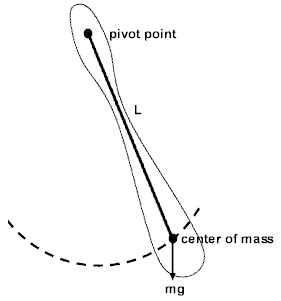
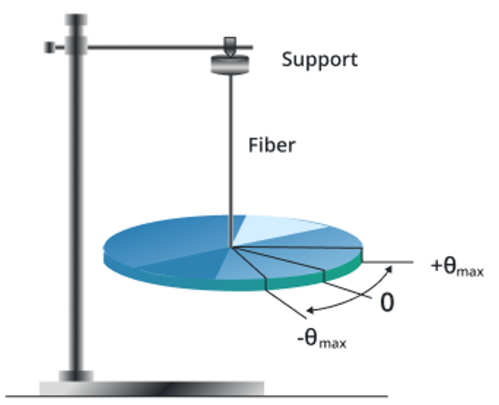

Before you get stressed out, this is NOT a major part of the test. You might get 1 or 2 questions on this so it's best to be prepared.
A physical pendulum is any rigid body that oscillates about a horizontal axis that does not pass through its center of mass. Unlike a simple pendulum, the mass distribution affects the period of oscillation.
The moment of inertia depends on the shape and mass distribution of the object. For common shapes:
A torsional pendulum consists of a disk or other object suspended by a wire or fiber that twists when the object rotates. The restoring torque is proportional to the angular displacement.
The torsional constant \(\kappa\) depends on the material properties of the wire and its geometry:
Physical Pendulums: Used in clocks, metronomes, and measuring devices. The period depends on the mass distribution and can be used to determine the moment of inertia of irregular objects.
Torsional Pendulums: Used in sensitive measuring instruments like galvanometers, seismometers, and torsion balances. They can measure very small forces and are used in precision experiments like the Cavendish experiment to measure gravitational constant.